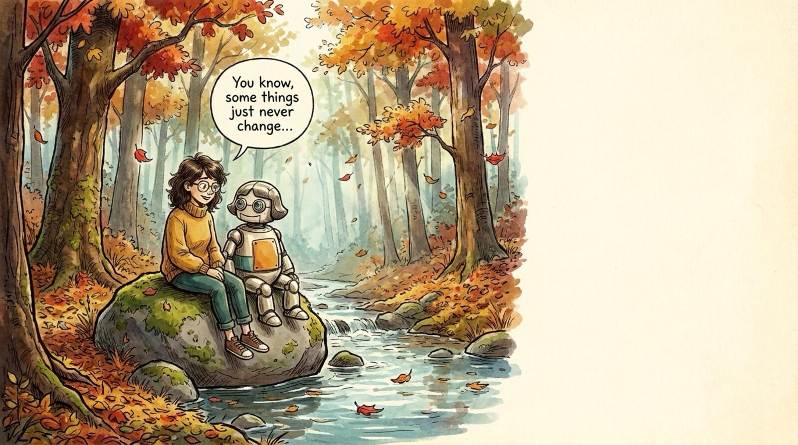

<section id="p09" data-transition="fade" style="background:#f5eee0">
  
  <ul id="e2-9qsf6k" style="position:absolute; top:472px; left:1290px; width:540px; font-family:Arial, sans-serif; font-size:40px; line-height:1.4; color:#222222">
    <li>Engineering is a bottleneck</li>
    <li>Users still hold the context</li>
    <li>Some things still can't be broken</li>
  </ul>
  <aside>Section: what HASN'T changed. Even as the river speeds up, three things stay put: engineering is still a bottleneck, users hold context engineers don't, and everyone needs to be safe.</aside>
</section>
